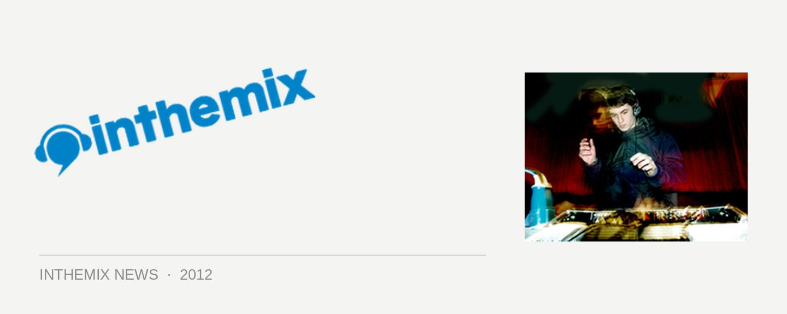

Is Skream's 'Midnight Request Line' the greatest dubstep song ever?
‘The 30 Greatest Dubstep Songs of All Time’ is a topic that was always bound to stir the pot, and US magazine Spin has ably taken on the challenge with a list that’s equal parts agreeably informed and cheekily controversial, tackling the genre on both its polarising ends. Skream is placed next to Skrillex, and Burial spotlighted alongside Kanye West, of all people.
The #1 spot is awarded to Skream’s 2005 prototype classic Midnight Request Line, which Spin singles out as a “game-changer”, and the first anthem to shrug off the sound’s stubborn prior refusal to be pigeonholed and instead, “wear the genre badge proudly. While its gurgling bass is a cauldron brewing under the dark, clean kicks of ’90s garage, the real star of the show is the melody… It was dubstep acting like pop years before pop noticed.”
It’s hard to argue with the tune’s seminal status, and similarly, Benga & Coki’s unmistakable Night, as well as Archangel from Burial’s groundbreaking Untrue album, appropriately take up the next two slots, Spin singling out the latter for inspiring “legions of imitators to try and match producer William Bevan’s skittering, pitch-shifted vocals and stumble-drunk rhythmic feints.”
It’s Spin’s choice for the #5 best dubstep song ever that will ruffle the most feathers, with the genre’s most divisive song ever taking home the accolade; none other than Skrillex’s, Scary Monsters and Nice Sprites. “At 82 million YouTube plays and counting, dubstep’s Godzilla stomp doesn’t get any bigger than this yowling chainsaw rocker from former emocore-scene kid Sonny Moore turned EDM It Boy Skrillex.” His mere presence will grind the gears of many a purist, but for better or worse, the tune marked a pivotal moment in the rapid rise of ‘brostep’.
Elsewhere in the list, there’s a comprehensive catalogue of influential bass producers, and plenty of those anthems that truly did send a rumble through the dubstep landscape. Joy Orbison’s Hyph Mngo is celebrated for ushering in a genre-busting new era; “stealth smash-ups of electronic styles like these are no longer ‘dubstep’ but ‘bass’”. Skream’s remix of La Roux’s In for the Kill is rightfully spotlighted as the point where dubstep embraced pop, long before even Skrillex arrived at the party, “one of contemporary EDM’s most anthemic moments”.
Meanwhile, the cheeky inclusion of Kanye West’s and Jay Z’s Niggas In Paris, on the very tail end of the list at #30, might not be as heretical as you’d assume. The 2011 anthem definitely offered something a little heavier and noisier than what’d been served up in mainstream hip hop in recent years, clearly influenced by the adventurous nature of bass music. “The best beat on the lush Watch the Throne wasn’t necessarily dubstep – just incomprehensible without it… putting a funhouse mirror to dubstep’s defining rhythmic move.” The rap duo of course also sampled Flux Pavilion’s I Can’t Stop on Watch the Throne cut Who Gon Stop Me. Express your approval and/or righteous indignation below.